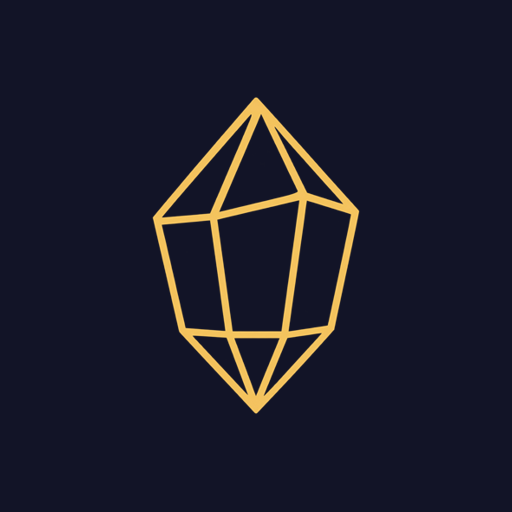

OSIRION
Sonho lúcido e viagem astral
de Vivian Pupin
Um caminho, noite após noite, para lembrar dos sonhos, despertar dentro deles e viajar além do corpo.
- ☾A prática da noite, com sons para atravessar
- ✎O diário dos sonhos e o céu das suas noites
- ✦Seis estágios, do primeiro sonho lembrado à viagem astral
Instale no seu iPhone
- Toque em Compartilhar na barra de baixo (se não aparecer, toque antes nos ⋯)
- Role e toque em Adicionar à Tela de Início
- Toque em Adicionar e abra o Osirion pelo ícone na tela
Pelo ícone ele abre como um app, em tela cheia, e pode mandar os lembretes da noite.
Instale no seu celular
Ele aparece na tela inicial como um app.
Instale no seu celular
- No Chrome, toque nos três pontinhos lá em cima
- Toque em Instalar app ou Adicionar à tela inicial
- Abra o Osirion pelo ícone na tela
Abra no navegador
- Toque nos três pontinhos no canto da tela
- Escolha Abrir no navegador
- Lá, esta página mostra como instalar
Abra no celular
O Osirion é feito para o celular, ao lado da cama. Aponte a câmera para o código: